Getting Started
Phone
Tablet
Keyman for Android lets you type in over 600 languages on Android mobiles and tablets.
To get started, here are some helpful hints:
| Keyboard Keys (Keyboard Present) |
|
|---|---|
| Install or select another language/keyboard | |
| 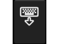 | Hide the keyboard |
 |
Backspace |
| 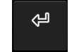 | Return |
 |
Shift key. Touch-and-hold this key to access the CTRL, ALT and CTRL ALT keys (which can access additional key layers) |
| Keys with a small dot in the top right corner indicate a touch-hold key. Access further functionality by touch-holding the key | |
| Toolbar Icons | |
| Share your text via Mail, Text, Facebook or Twitter | |
| Open the Keyman Browser to use the web in your language | |
| Open the menu for additional options | |
| Adjust the font size | |
| Delete all current text | |
| Load this help page | |
| Open the initial setup screen | |
Switching between Keyboards
To switch keyboards, follow these steps:
Step 1)
With the keyboard visible, touch the globe key:
This will bring up a list of all currently installed languages (the default is English
EuroLatin2). If you have already downloaded additional languages, they will appear here.
Simply select them and the keyboard will re-appear with the new language.
If you haven't installed any languages as yet, touch the +
button in the top right corner of your screen.
Step 2)
A list of all available languages will appear. Scroll through this list until you find
the language you want to install. Some languages may have multiple keyboards - for
example we have 10+ different Tamil keyboards.
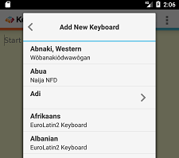
Select the language and keyboard you want to install - a popup will ask for confirmation,
hit the Download button.
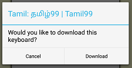
Step 3)
Once the download is complete, the new keyboard will be selected. Touch the Return button on the top left corner of the popup and the new
keyboard will become active.
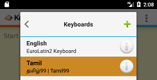
Hotkey
To switch between languages while using an external keyboard (i.e. a bluetooth keyboard), a quick and easy way is to use a hotkey combination. Press and hold 'Ctrl' and then press 'Tab'. You should see a list of languages/keyboards. Tap on any available language of your choice.
Accessing Keyboard Help
Step 1) Open the keyboard list by touching the globe key.
Step 2) Touch the info icon for your keyboard.
Installing System Wide Keyboards
Step 1) Open the Keyman app and select the menu for additional options. The screenshots below are of a device running Android 7.1 Nougat.
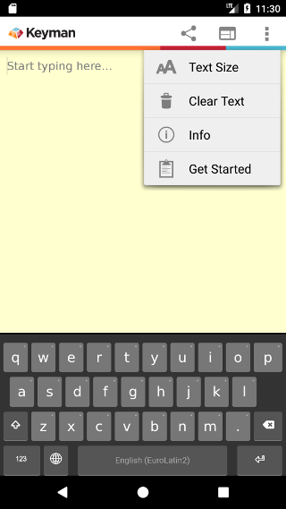
Step 2) Select 'Get Started' and then select 'Enable Keyman as a system-wide keyboard'.
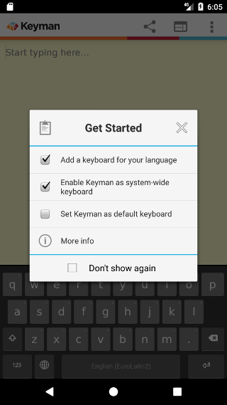
This will open an Android settings screen for 'Available virtual keyboard'.
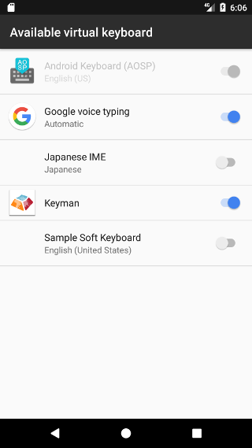
Step 3) Enable 'Keyman' as an available virtual keyboard. This will bring up two confirmation dialogs.
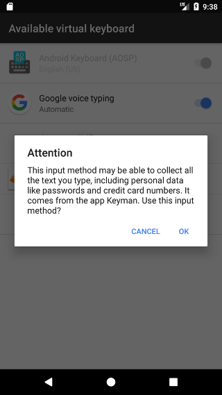
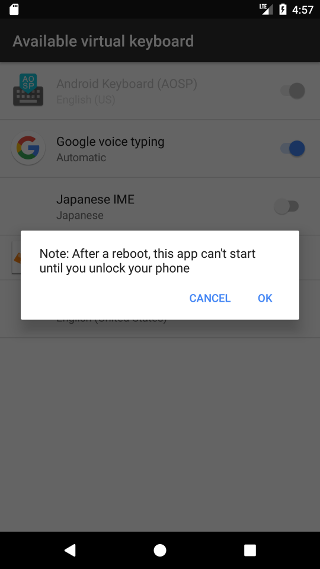
Select 'OK' on both. Now when the on-screen keyboard appears for apps other than Keyman, you'll see a keyboard icon at the bottom right.
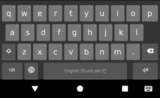
Click the keyboard icon whenever you want to change the current system keyboard.
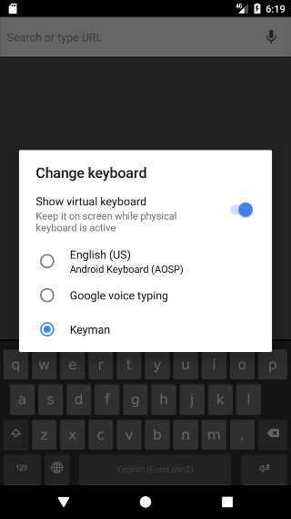
Installing Custom Keyboards
Step 1) Click the link to your custom keyboard json file. (Note: typing the link into
your browser URL bar won't work, you will need to include the link in a web page or email)
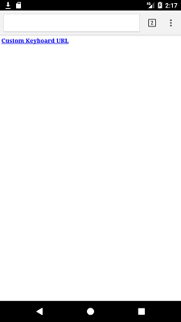
Step 2) Click 'Download'. This will fetch the keyboard and font specified from the json file:
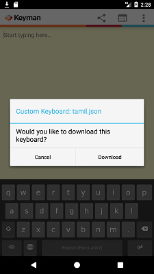
Once the keyboard has been downloaded, you should be able to use it as normal.
To learn how to create a custom installable keyboard,
click here.
Use the Keyman Browser
Step 1) Click the Keyman Browser button in the Keyman app
Step 2) Enter the URL of a website to visit into the address bar, for example google.com.
Keyman Browser will load the page and detect your language if it is present, and reformat it to show your
language instead of square boxes.
Step 3) Use the bookmark button to save the current page for browsing later.
Step 4) Use the Globe icon to swap between languages.
Integrate Keyman with your App or Website
If you are interested in learning how Keyman can be integrated into your own app or website, visit keyman.com/engine
Further Help
For more information on Keyman, visit keyman.com
For more information on Keyman for Android, visit keyman.com/android
Keyman for Android lets you type in over 600 languages on Android mobiles and tablets.
To get started, here are some helpful hints:
| Keyboard Keys (Keyboard Present) |
|
|---|---|
| Install or select another language/keyboard | |
| 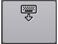 | Hide the keyboard |
| 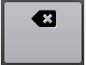 | Backspace |
| 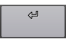 | Return |
| 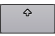 | Shift key. Touch-and-hold this key to access the CTRL, ALT and CTRL ALT keys (which can access additional key layers) |
| 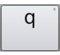 | Keys with a small dot in the top right corner indicate a touch-hold key. Access further functionality by touch-holding the key |
| Toolbar Icons | |
| Share your text via Mail, Text, Facebook or Twitter | |
| Open the Keyman Browser to use the web in your language | |
| Adjust the font size | |
| Delete all current text | |
| Link to this info page | |
| Open the initial setup screen | |
Switching between Keyboards
To switch keyboards, follow these steps:
Step 1)
With the keyboard visible, touch the globe key:
This will bring up a list of all currently installed languages (the default is English EuroLatin2).
If you have already downloaded additional languages, they will appear here.
Simply select them and the keyboard will re-appear with the new language.
If you haven't installed any languages as yet, touch the +
button in the top right corner of your screen.
Step 2)
A list of all available languages will appear.
Scroll through this list until you find the language you want to install.
Some languages may have multiple keyboards - for example we have 10+ different Tamil keyboards.
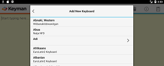
Select the language and keyboard you want to install - a popup will ask for confirmation, hit the Download button.
Step 3)
Once the download is complete, the new keyboard will be selected. Touch the Return button on the top left corner of the popup and the new
keyboard will become active.
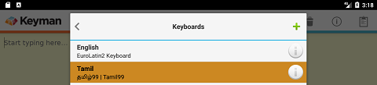
Hotkey
To switch between languages while using an external keyboard (i.e. a bluetooth keyboard), a quick and easy way is to use a hotkey combination. Press and hold 'Ctrl' and then press 'Tab'. You should see a list of languages/keyboards. Tap on any available language of your choice.
Accessing Keyboard Help
Step 1) Open the keyboard list by touching the globe key.
Step 2) Touch the info icon for your keyboard.
Installing System Wide Keyboards
Step 1) Open the Keyman app. The screenshots below are of a device running Android 7.1 Nougat.
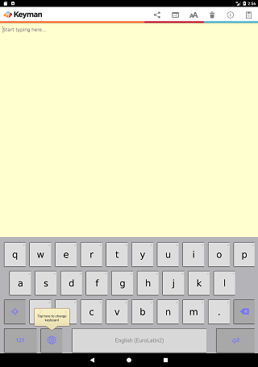
Step 2) Select 'Get Started' and then select 'Enable Keyman as a system-wide keyboard'.
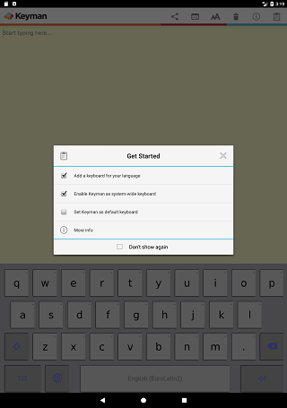
This will open an Android settings screen for 'Available virtual keyboard'.
Step 3) Enable 'Keyman' as an available virtual keyboard. This will bring up two confirmation dialogs.
Select 'OK' on both. Now when the on-screen keyboard appears for apps other than Keyman, you'll see a keyboard icon at the bottom right.
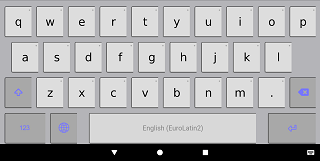
Click the keyboard icon whenever you want to change the current system keyboard.
Installing Custom Keyboards
Step 1) Click the link to your custom keyboard json file. (Note: typing the link into
your browser URL bar won't work, you will need to include the link in a web page or email)
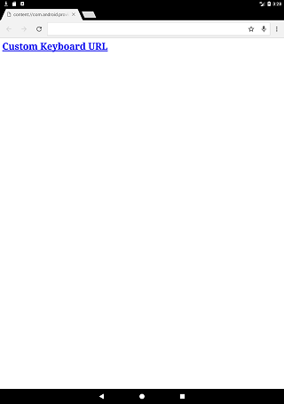
Step 2) Click 'Download'. This will fetch the keyboard and font specified from the json file:

Once the keyboard has been downloaded, you should be able to use it as normal.
To learn how to create a custom installable keyboard,
click here.
Use the Keyman Browser
Step 1) Click the Keyman Browser button in the Keyman app
Step 2) Enter the URL of a website to visit into the address bar, for example google.com.
Keyman Browser will load the page and detect your language if it is present, and reformat it to show your
language instead of square boxes.
Step 3) Use the bookmark button to save the current page for browsing later.
Step 4) Use the Globe icon to swap between languages.
Integrate Keyman with your App or Website
If you are interested in learning how Keyman can be integrated into your own app or website, visit keyman.com/engine
Further Help
For more information on Keyman, visit keyman.com
For more information on Keyman for Android, visit keyman.com/android